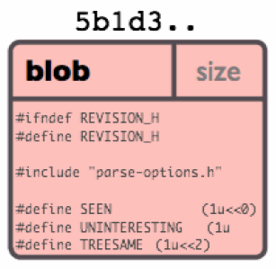
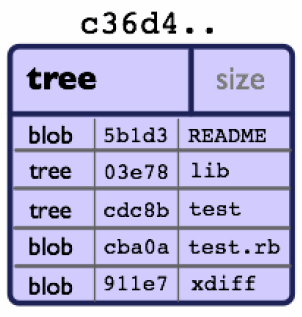
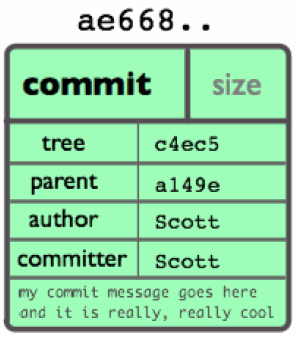
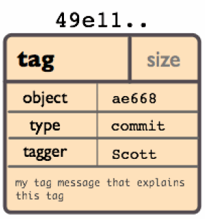

La gestion de version avec GIT
LTE Consulting
Arnaud Tournier
ArchiDév passionné
Fondateur de LTE Consulting
Créateur de POM Explorer, Angular2Boot, etc.
Speaker Java One, Devoxx, GWT.create, Paris/Toulouse JUG, GDG, etc.
Full stack !
Qu'est-ce que git ?
Git
- Logiciel de gestion de version distribué.
- Un ensemble de petits outils pour manipuler un arbre d'objets.
- Créé par Linus Torvalds, pour les besoins du noyau Linux.
- Le développement commence en 2005.
- Développement repris maintenant par Scott Chacon.
- Extrêment rapide, peut gérer de gros projets
- Tracke des snapshots et non des différences
- Assure la cohérence
- http://git-scm.com
Git n'efface pas
Les données sont toujours ajoutées aux index
Donc une fois indexées, une modification ne sera jamais perdue
La concurrence
Les systèmes centralisés : SVN, CVS, Perforce, ...
Les systèmes décentralisés : Mercurial, BitKeeper, ...
Introduction en pratique
Configuration
git config -l
- git config --global user.name "Mon nom"
- git config --global user.email "mon.email@mail.un"
- git config --global color.ui true
git config --global core.editor vim
On peut aussi configurer l'auto-complétion (sous Linux)
- contrib/completion/git-completion.bash à sourcer dans ~/.profile
Aide ?
- git help
- git help commande
Créer un repository
- mkdir projet
- cd projet
- git init
Les commandes de base
- éditer des fichiers...
- git add file1 file1 ...
- git diff --cached
- git status
- git commit -m "Premier commit"
- git log
- git status
On efface tout !
cd ..
rm -Rf projetRevenons à la théorie : le modèle objet
Sha
Les SHA sont partour dans git !
40 caractères représentant la signature d'un contenu
6ff87c4664981e4397625791c8ea3bbb5f2279a3Il est impossible que deux contenus différents aient le même SHA
Ceci apporte certains avantages :
- comparaison d'objets rapide,
- les sha sont identiques sur les repos différents,
- détection des erreurs de cohérence.
Les objets
Un type, une taile et un contenu
Il y a quatre types :
- BLOB : stockage d'un fichier
- TREE : référence des sous TREE et des BLOBS
- COMMIT : pointe vers un TREE et contient des métadonnées (auteur, date, commit(s) parents)
- TAG : utilisé pour tagger des commits
Les blobs
|  |
|
Stockage
Le stockage des objets peu être détendu :
- Format ZIP dans un seul fichier (.git/objects/0a/ef6617772...)
Ou bien packagé :
- Stocke seulement les changements, et un pointeur vers le contenu similaire
- Calculé au moment d'un
git gc - Utilisé aussi pour les transfers inter-repo
L'objet tree
|  |
|
L'objet commit
|  |
Créé avec la commande Pour explorer : |
Exemple de contenu
L'objet tag
|  |
Création avec Pour explorer : |
Ramasse miettes
- git gc
Il est bon de le faire de temps en temps, mais attentions à ne pas perdre de "dandling commits" !!!
Le répertoire .git
| Fichier | Rôle |
|---|---|
| HEAD | pointeur vers votre branche courante |
| config | configuration de vos préférences |
| description | description de votre projet |
| hooks/ | pre/post action hooks |
| index | fichier d'index |
| logs/ | un historique de votre branche |
| objects/ | vos objets (commits, trees, blobs, tags) |
| refs/ | pointeurs vers vos branches |
Le répertoire de travail
- C'est votre espace de travail
- A la racine de votre projet
- Il est souvent modifié !
Cycle de vie

Cycle de vie en détail

L'index
- Fichier
.git/index - Zone d'assemblage pour construire un commit
- A la création d'un commit, ce n'est pas le répertoire de travail qui est pris en compte, mais cette zone dite de staging
Voici quelques commandes associées :
git add file
git rm file
git status
git commit
...Les branches
- Ce sont des pointeurs nommés sur des commits
- Stockées dans le répertoire
.git/refs/ - La branche par défaut est master
Quelques commandes :
git branch branch_name
git checkout branch_nameIllustration
Le pointeur HEAD
C'est un pointeur symbolique qui indique le commit courant.
Il est en général égal à la branche courante.
Mais pas forcément, c'est le mode detached.
Utilisation locale
Cloner un repo
Fonctionne avec les protocoles : fichiers, http, git, ssh, ...
git clone git://server/path/projet.gitVous êtes maintenant "branchés" sur le repository "central"
Qu'a fait git clone ?
- Enregistre les coordonnées du dépôt distant,
- Rapatrie la branche
origin/masterainsi que ses commits, - Crée une branche
master(locale) pointant sur le même commit queorigin/master, - Fait le checkout de la branche
master
Ajouter un fichier à l'index
git add file1 file2 ...
git diff --cached
git statusEtat du repository
- Répertoire de travail :
git status,git diff - Index :
git diff --cached - Les deux :
git diff HEAD - Seulement les stats :
git diff --stat - Et ça ?
git diff HEAD -- ./lib
Effectuer un commit
git commit -m "message"
git commit -a -m "message"Modifier le commit précédent :
git commit --amendConseils pour un commit
- Faire des petits changements
- De nombreuses fois
- Message : une ligne de sujet, une ligne vide et une description
Annuler une modification
git checkout -- fichierRetirer un fichier de l'index
De l'index et du répertoire de travail
git rm fichier
De l'index seulement
git rm --cached fichier.gitignore
Par défaut, git surveille tous les fichiers de l'espace de travail.
Le fichier .gitignore permet de spécifier des patterns à ignorer, exemple :
.settings/
.project
*.classpath
/doc/[abc]*.txt
*.iml
gwt-gen/Git reset
| Forme | Impact |
|---|---|
| git reset HEAD fichier | retire de l'index, ne touche pas au fichier |
| git reset | détruit la zone de staging (index) |
| git reset --hard | idem, mais touche aux fichiers de travail |
| git reset commit | repositionne la branche courante sur le commit |
| git reset --soft | ne touche ni à l'index, ni au fichiers de travail |
Utilisation des branches
- git branch
- git branch experience
- git checkout experience
- git checkout -b experience
- git checkout master && git merge experience
- git branch -d experience
La fusion (merge)
Après avoir créé et travaillé sur une branche de développement, on souhaite la fusionner dans la branche principale
Merge en images
Merge en images
Merge en images
Exemple
Avoir un repo clean
- git checkout -b dev
- créer un fichier
- git commit -a -m "dev 1"
- git checkout master
- git merge dev
- git branch -d dev
Les cas de merge
- Pas de conflit, fast-forward (cas précédent)
- Pas de conflit, mais il faut un commit de merge (la plupart des cas)
- Conflits !
Détection des conflits
Si un conflit apparaît, l'opération de merge s'arrête temporairement, et git indique directement dans les fichiers les endroits qui posent problèmes.
<<<<<<< HEAD:file.txt
Hello world
=======
Goodbye
>>>>>>> 77976da35a11db4580b80ae27e8d65caf5208086:file.txtRésolution des conflits
A vous alors de résoudre le conflit. Il existe de nombreux outils disponibles...
Une fois le conflit résolu, faire :
git add file.txt
git commitHistorique
- git log
- git log --since="2 weeks ago"
- git log extract.sh
- git log commons/
- git log -S'foo()'
- git log -p # pour voir les patchs
- git log --stat
- git log --pretty=oneline
- git log --pretty=format:'%h was %an, %ar, message: %s'
- git log --graph
Ordonnancement de l'historique
git log --pretty=format:'%h : %s' --topo-order --graph
* 4a904d7 : Merge branch 'idx2' |\ | * dfeffce : merged in bryces changes and fixed some testing issues | |\ | | * 23f4ecf : Clarify how to get a full count out of Repo#commits | | * 9d6d250 : Appropriate time-zone test fix from halorgium
Comparaison de commits
git diff master..test
git diff master...test
Les raccourcis
Sha partiel
Pour référencer un SHA, on utilise :
980e3ccdaac54a0d4de358f3fe5d718027d96aae
980e3ccdaac54a0d4
980e3ccPointeurs
Vous pouvez également utiliser toute branche, tag, etc... :
980e3ccdaac54a0d4de358f3fe5d718027d96aae
origin/master
refs/remotes/origin/master
master
refs/heads/master
v1.0
refs/tags/v1.0Autres
master@{1 month ago}
master^2 # Deuxième parent
master~3 # Troisième ancêtre
master^^~ #idemPointeur de tree
Pour obtenir le SHA du TREE vers lequel un COMMIT pointe, on fait :
master^{tree}Blobs
Pour obtenir le SHA d'un blob :
master:/chemin/fichierRebase
Les commits de merge sont puissants mais ils compliquent aussi l'historique.
La commande git rebase vient à la rescousse ! Elle permet de réécrire l'historique.
Rebase en image

Rebase en image

Rebase en image

Notez bien que C4' est différent de C4 !
Rebase en image

Rebase local
git checkout experiment
git rebase master
Rebase la branche developpement sur la branche master.
Conflits
Il peut y avoir des conflits.
Dans ce cas comme pour un merge, l'utilisateur résout et :
git rebase --continue
git rebase --abort # pour annulerRebase intéractif
Permet réécrire très facilement vos commits. C'est très pratique et très puissant pour le travail collaboratif.
git rebase -i
Ouvre un éditeur de texte contenant ceci :
pick fc62e55 added file_size
pick 9824bf4 fixed little thing
pick 21d80a5 added number to log
Les trois commandes disponibles sont : pick, squash, edit
Rebase intéractif - edit
Git vous redonne la main, ce qui permet par exemple de couper un commit en deux.
git add fichier1
git commit -m "tache A"
git add fichier2
git commit -m "tache B"
git rebase --continueLes tags
Un label qui pointe sur un commit
- git tag v2.3.4b 1b238ae12
Les tag objets
- git tag -a v2.3.4b 1b238ae12
-s pour signer le tag, après avoir configuré la clé utilisateur
- git config --global user.signingkey
<gpg-key-id>
Collaboration
Principe
Git est distribué.
Il fournit des outils pour synchroniser des repositories distants.
Un repo local n'est pas différent d'un repo distant, il contiennent tous les deux toutes les informations.
Configuration d'un dépôt public
C'est un repository sans zone de travail (bare)
Avec le protocole git
A partir d'un repo local, avec le protocole git :
- git clone --bare src_folder dest_folder
- touch dest_folder/.git/git-daemon-export-ok
Ensuite, lancer le démon git
- git daemon
Avec le protocole http
Avec le protocole http :
- git clone --bare src_folder dest_folder
- git --bare update-server-info
- chmod a+x hooks/post-update
Les autres peuvent cloner comme ceci :
- git clone http://adresse/projet.git
Avec le protocole ssh
- git clone --bare src_folder dest_folder
Les autres peuvent cloner comme ceci :
- git clone user@server:chemin/projet.git
Git clone
- Enregistre les coordonnées du dépôt distant,
- Rapatrie la branche
origin/masterainsi que ses commits, - Crée une branche
master(locale) pointant sur le même commit queorigin/master, - Fait le checkout de la branche
master
Travailler avec des repos distants
Liste des repos distants :
git remoteAjouter et retirer :
git remote add origin http://...
git remote rm originFetch
Ramène les commits et les branches distants :
git fetch <remote>
git fetch <remote> <branch>Cette commande n'a aucune incidence sur votre travail local. Mais maintenant votre repo est à jour des informations contenues dans le repo distant.
Les branches distantes
- contenues dans
refs/remotes/origin/... - faire un
checkoutsur un branche distante nous place en état detached, mais permet la revue avant intégration. - pour fusionner les changements il suffit de faire un
git merge origin/master
Pull
Le deux étapes précédentes sont si courantes qu'il existe une commande intégrée : git pull.
git pull <remote>
git pull --rebase <remote>Rebase avec un repo distant
git rebase
git pull --rebase- détruit les commits locaux
- synchronise les commits de origin
- rejoue les commits locaux
Push
Envoi du travail local vers un repo distant
git push <remote> <branch>Git distant refusera si les commits ne sont pas "fast-forward"
git push --force # ATTENTION !Par défaut les tags ne sont pas transférés :
git push --tagsExemple
git checkout master
git fetch origin master
git rebase -i origin/master
# Squash commits, fix up commit messages etc.
git push origin masterBranche de suivi
Une branche peut être configurée pour suivre automatiquement une branche distante lors des git pull et git push :
git branch --track exp origin/exp` A noter : git clone fait ceci automatiquement sur la branche master
Workflows
Git s'adapte
Un des gros avantages de Git est de vous permettre d'adapter son utilisation à votre workflow, et pas l'inverse.
Une foule de workflow différents existent, voici quelques exemples...
Le partagé

L'intégration

Le dictateur

Git Flow
C'est une façon de fonctionner avec git.
On utilise 5 sortes de branches
- branche de développement
- branches de features
- branches de release
- branche master
- branches de hotfix
Début d'une feature
Création d'une branche de feature basée sur la branche de développement
Fin de la feature
Fusion de la branche feature dans la branche développement (--no-ff), effacement de la branche feature
Commencer une release
Création de la branche de release à partir de la branche développement
Terminer une release
Merge la branche de release dans developpement et master, Taggue la branche master et détruit release
Commencer un Hotfix
Création de la branche de hotfix à partir de la branche master
Terminer un hotfix
La branche hotfix est fusionnée dans master et développement. La branche master est tagguée avec le numéro de hotfix.
Utilisation avancée
Le Stash
Afin de pouvoir rapidement sortir de l'état courant pour aller sur une autre branche, le stash sauvegarde le travail en cours
git stash save "en cours tache C"L'index est maintenant vide, le répertoire de travail est propre. Pour revenir :
git stash applyLa file de stash
Pour montrer la file des stashs :
git stash list
stash@{0}: WIP on book: 51bea1d... fixed images
stash@{1}: WIP on master: 9705ae6... changed the browse codePour appliquer un stash :
git stash apply stash@{1}Pour vider la liste :
git stash clearCréer un commit d'annulation
Git permet de créer un commit mirroir d'un autre commit :
git revert SHABien sûr des conflits peuvent se produire...
Le Cherry-Pick
Il vous permet de reproduire un commit à un autre endroit, en le dupliquant.
git cherry-pick SHAPour résoudre les éventuels conflits :
git cherry-pick --continue
git cherry-pick --abortDéplacer un fichier
git mv fichier nouveau_fichierest équivalent à
mv fichier nouveau_fichier
git rm fichier
git add nouveau_fichierBlame
Permet de voir l'auteur de chaque ligne d'un fichier :
git blame index.html --date short
...
96776a42 (Gregg 2012-06-29 9) <ul>
96776a42 (Gregg 2012-06-29 10) <li>Cats</li>
3ea7f709 (Jane 2012-06-30 11) <li>Octopi</li>
96776a42 (Gregg 2012-06-29 12) </ul>Alias
Permet de rajouter des commandes à git :
git config --global alias.mylog \
"log --pretty=format:'%h %s [%an]' --graph"
Donnera :
git mylog
* 19f735c Merge branch 'admin' [Jane]
|\
| * 7980856 Add user admin [Jane]Bisect
Aide la recherche du commit fautif...
git bisect start
git bisect good v2.6.18
git bisect bad masterPuis
git bisect bad
... ou ...
git bisect good
git bisect resetReflog
Git tient un journal de bord de HEAD. Il permet par exemple de retrouver des commits non-référencés.
git reflog
ad8621a HEAD@{0}: reset: moving to HEAD~3
298eb9f HEAD@{1}: commit: Some other commit message
bbe9012 HEAD@{2}: commit: Continue the feature
9cb79fa HEAD@{3}: commit: Start a new feature
... et donc ...
git checkout HEAD@{1}Retrouver un commit
Si par mégarde vous perdez un (ou plusieurs) commit, vous pouvez toujours chercher les "dandling" commits avec cette commande :
git fsck −−lost-foundVous rapatrierez ensuite ceci avec git checkout, git rebase, git cherry-pick, ...
Rechercher dans les commits
git grep chaine
-n pour les numéros de ligneLes Hooks
Afin de faciliter son intégration avec les usines logicielles, Git propose des hooks.
Ce sont des scripts exécutés à différents moments du cycle de vie, ils sont stockés dans .git/hooks/.
Vous pouvez les utiliser pour déclencher des opérations particulières.
Utilité des hooks
Typiquement ils peuvent servir :
- à vérifier les messages de commit,
- envoyer des informations à la gestion de projet,
- workflow d'intégration continue (déclenchement de build)...
Les hooks client
| Hook | Utilisation |
|---|---|
| pre-commit | Vérification avant commit |
| prepare-commit-msg | Préparation du message de commit |
| commit-msg | Traitement du message utilisateur |
| post-commit | Action après commit (email, CI, ...) |
| post-checkout | Après checkout |
| pre-rebase | Avant un rebase |
En général, si le hook retourne <> 0, l'action est abandonnée
Les hooks serveur
| Hook | Utilisation |
|---|---|
| pre-receive | Avant le push |
| update | Idem, mais une fois par ref poussée |
| post-receive | Après un push réussi |
Créer une branche vide
git symbolic-ref HEAD refs/heads/nouvellebranche
rm .git/index
git clean -fdx
<travailler>
git add vos fichiers
git commit -m 'Premier commit'Ecosystème
GUIs
- gitk (par défaut)
- SourceTree
- TigGit (console)
- SmartGit
Autour de Git
- gitosis
- gerrit
- gitblit
- git-flow
- ...
Références
Quelques sites...
https://git-scm.com
https://www.atlassian.com/git/tutorials/
http://gitimmersion.com/
Merci !!!
Questions ?
http://www.lteconsulting.fr